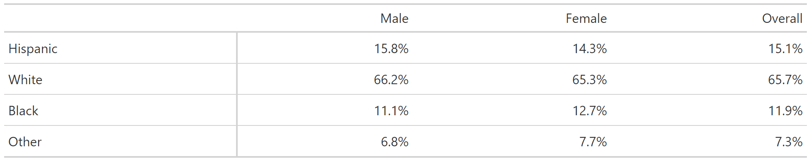
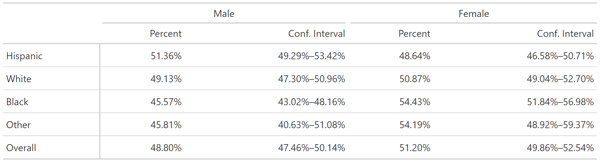

Uses bhhi_cascade() with srvyr::survey_prop() to calculate weighted
crosstabs and then uses bhhi_format_crosstab() to create nicely formatted
output via the gt table package.
Usage
bhhi_gt_crosstab(
.data,
row_var,
col_var,
pct_direction = "col",
add_n = FALSE,
vartype = c("se", "ci", "var", "cv"),
level = 0.95,
proportion = TRUE,
decimals = 1,
convert_labelled = TRUE,
na.rm = FALSE
)Arguments
- .data
tbl A
tbl_svyobject- row_var
Variable to show in the rows in output.
- col_var
Variable to show in the columns in output.
- pct_direction
'col'to calculate column percentages or'row'to calculate row percentages. Defaults to'col'.- add_n
Add cell N to output. Defaults to FALSE.
- vartype
Report variability as zero or more of: standard error ("se", default), confidence interval ("ci"), variance ("var") or coefficient of variation ("cv"). Defaults to hiding variability.
- level
(For vartype = "ci" only) A single number or vector of numbers indicating the confidence level
- proportion
Use methods to calculate the proportion that may have more accurate confidence intervals near 0 and 1. Based on
svyciprop.- decimals
An integer specifing the number of decimal places in the results. Defaults to 1.
- convert_labelled
If either
row_varorcol_varishaven::labelled, automatically convert to factor. Defaults to TRUE.- na.rm
Drop missing values. Defaults to FALSE.
Examples
data("nhanes", package = "survey")
survey_object <- nhanes |>
dplyr::rename(gender = RIAGENDR) |>
dplyr::mutate(
gender = factor(gender, 1:2, c("Male", "Female")),
race = factor(race, 1:4, c("Hispanic", "White", "Black", "Other"))
) |>
srvyr::as_survey(weights = WTMEC2YR)
survey_object |>
bhhi_gt_crosstab(race, gender)
survey_object_labelled <- nhanes |>
dplyr::rename(gender = RIAGENDR) |>
dplyr::mutate(
gender = factor(gender, 1:2, c("Male", "Female")),
race = factor(race, 1:4, c("Hispanic", "White", "Black", "Other")),
dplyr::across(c(gender, race), labelled::to_labelled)
) |>
srvyr::as_survey(weights = WTMEC2YR)
survey_object_labelled |>
bhhi_gt_crosstab(race, gender)
survey_object |>
bhhi_gt_crosstab(
race, gender, pct_direction = "row", vartype = "ci", decimals = 2
)